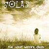

Celtic Lyrics Corner > Artists & Groups > Solas > The Hour Before Dawn > When My Love And I Parted
|  | When My Love And I Parted |
| Credits : | Traditional; arranged by Winifred Horan, Deidre Scanlon & Seamus Egan |
| Appears On : | The Hour Before Dawn |
| Language : | English |
Lyrics :
When my love and I parted, the wind blew cold
When my love and I parted, our love untold
Though my heart was crying, "Love, come with me"
I turned my face from him and sought the sea
When my love and I parted, we shed no tears
For we knew that between us lay weary years
A bird was singing on a tree
And a gleam of sunlight lay on the sea
Parting is bitter and weeping, vain
But all true lovers will meet again
For no fate can sever my love from me
For his heart is a river and mine, the sea